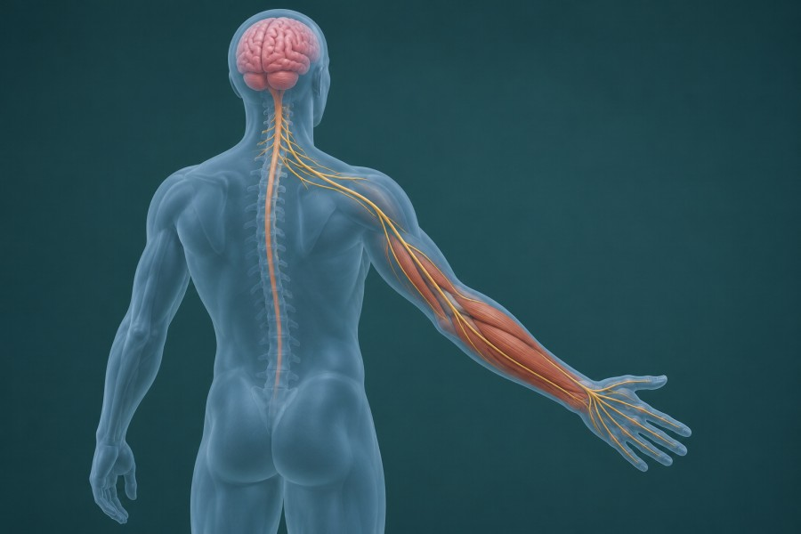
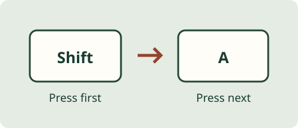
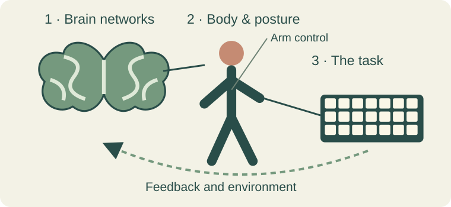
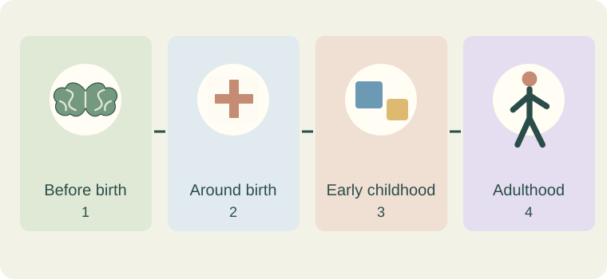
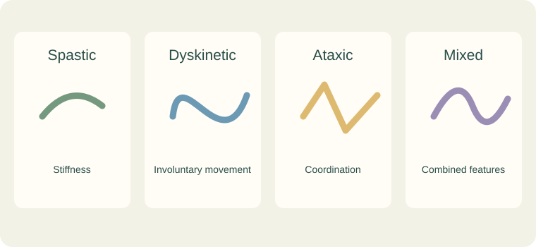
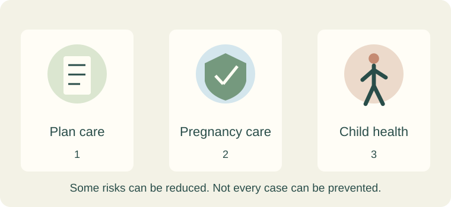
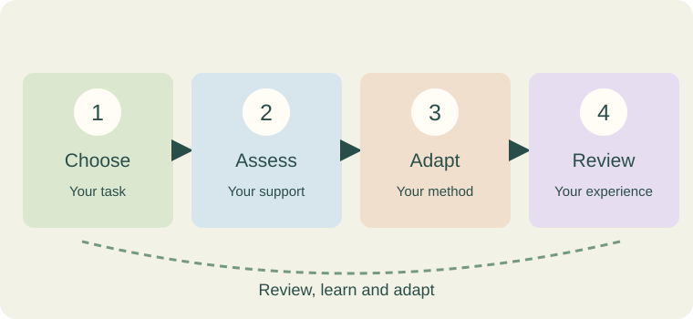
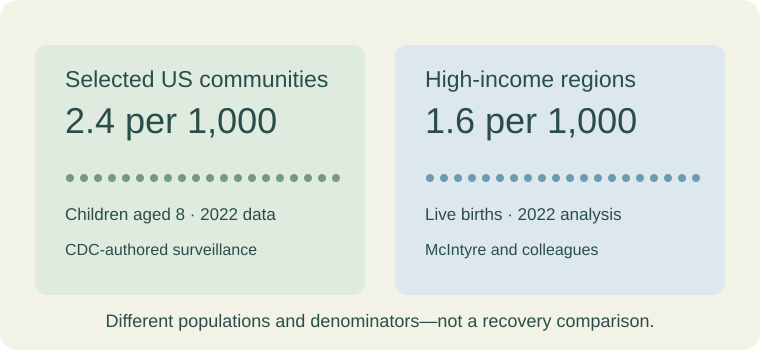

Before or around birth
Most CP begins before or during birth. It is not always caused by a difficult delivery and is not evidence that a parent did something wrong.
01 / LEARN AT YOUR PACE
Advancing understanding of human movement and recognising the diversity of motor abilities.
Explore causes, types, prevention and what improvement can mean—one topic at a time.

Follow a voluntary reach from intention through motor coordination to feedback.
You decide which key to press.

Observe where targeting happens. A position change can alter how far the hand needs to travel.
Position the hand relative to the keyboard and move towards the keys.



These are examples of possible task demands. Movement and support needs vary among people with CP.
Use the same message in both setups. Compare time, final text errors, and comfort. A result describes that task in that session.
Try a comparison
CP is a group of lifelong movement and posture conditions linked to differences in, or injury to, the developing brain. Its effects vary between people and across tasks.
The original brain injury is non-progressive. Comfort, fatigue and function can change over time. CP does not define intelligence, potential or the value of a life.
Explore support options →Signals, sensation, posture, muscle tone and the environment all influence a task. This diagram simplifies a complex system.

Photo: Chona Kasinger / Disabled And Here, CC BY 4.0. Resized. No diagnosis is assumed.

Possible pathways, not a sequence every person experiences. Risk is not blame, and not every case can be prevented.
WHY CP HAPPENS
CP follows differences in brain development or injury while the brain is developing. Pathways can involve genetic changes, infection, stroke, bleeding or reduced oxygen supply. Prematurity and low birthweight increase risk, but a risk factor is not a diagnosis. The exact cause is often unclear.
Most CP begins before or during birth. It is not always caused by a difficult delivery and is not evidence that a parent did something wrong.
Acquired CP may follow a brain infection or injury in the first years of life. Severe untreated newborn jaundice can also damage the brain.
An adult may receive a late diagnosis, but CP begins during brain development. A new adult brain injury usually has a different diagnosis. The original injury is non-progressive; pain, fatigue and function can still change.
Sources: CDC causes and risks · NHS causes.

TYPES OF CEREBRAL PALSY
Increased muscle tone and stiffness can make movement difficult. About 80% of people with CP have the spastic type, according to the CDC.
Involuntary movements and changing muscle tone can affect posture, reaching or speech. Dystonia can cause twisting movements or sustained postures.
Balance and coordination can be difficult, including precise tasks such as writing or reaching toward a small object.
Features of more than one movement type occur together. Support should follow the person’s actual needs.
These describe the body areas involved: one side (hemiplegia), mainly both legs (diplegia), or all four limbs, often with trunk involvement (quadriplegia). They do not by themselves describe someone’s communication, intelligence, independence or goals. A clinician can explain the terminology used in your own assessment.
CDC: movement types and body distribution. Classification is a clinical assessment, not a self-test.
This simplified hand illustrates a movement task. It does not depict a particular person’s CP or prescribe a range of movement.
Illustrative geometry, not a simulation or diagnosis of any CP subtype. People may use different strategies, and movement alone cannot determine someone’s experience.

PREVENTION & RISK REDUCTION
These steps concern pregnancy and early-childhood health; they cannot undo an existing brain injury. CP can occur despite excellent care. Prevention information should support families, never assign blame.
Discuss health conditions, medicines and vaccination needs with a healthcare professional. Some vaccines need to be given before pregnancy.
Attend antenatal care and seek care for infection. For anticipated very preterm birth, clinicians may use magnesium sulfate for neuroprotection when appropriate; it is not a self-treatment.
Prompt jaundice assessment and treatment, recommended vaccinations and prevention of head injuries can reduce some avoidable causes of brain injury.
CDC prevention guidance. Ask your care team about recommendations for your country and circumstances.

WHAT IMPROVEMENT CAN MEAN
There is no established cure for CP. Rehabilitation can support learning and maintaining skills, comfort and participation. Some people make substantial gains; the amount and type of change vary. A promise of “near-normal recovery” would not describe everyone’s experience.
Write your name, type a message, make art, or handle an object with less effort.
Ask a physiotherapist or occupational therapist about pain, tone, strength, grip, support and the environment.
Use an agreed task-specific plan, suitable equipment, manageable practice and rest. Medicines or procedures may help selected symptoms.
Notice comfort, effort and participation. Adjust the plan when needs change. Progress can include doing the task a different way.
You do not need to move like anyone else to have a full, meaningful life. New weakness, persistent pain or loss of function deserves assessment; it should not automatically be attributed to CP.
Sources: WHO: rehabilitation · NICE: CP in adults · Explore care options below.

DATA, WITH CONTEXT
Estimates depend on age, place, time and how people are identified. These figures are not interchangeable, and none predicts one person’s future.
ADDM surveillance for 2022, published in 2026. Records-based identification across selected communities; this is not a census of all US children.
CDC-authored study →A 2022 systematic analysis estimated overall CP birth prevalence using recent cohorts (birth years 2010 onward). 95% confidence interval: 1.5–1.7 per 1,000.
McIntyre and colleagues →WHO’s 2024 fact sheet covers all conditions and ages. This is an assistive-technology access figure, not a count of people with CP.
WHO assistive technology →Sources checked 10 November 2026. Further reading: CDC tracking methods · AACPDM early detection · WHO neurological rehabilitation package (2023) · Wikipedia overview and history. WHO resources are referenced; this project is not endorsed by WHO.